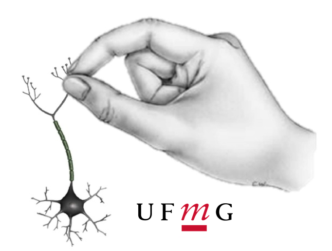
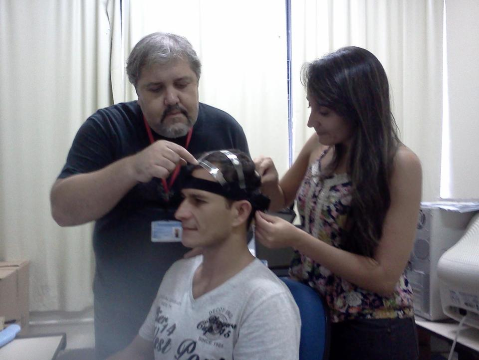
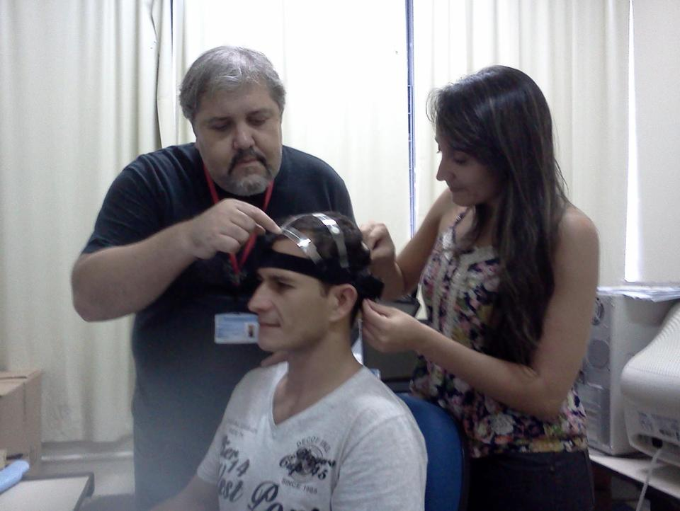
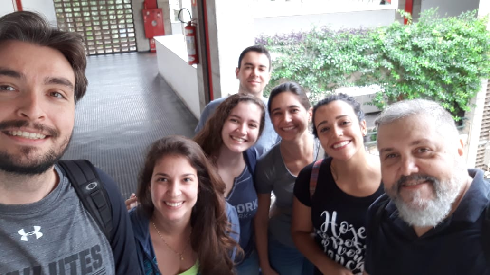
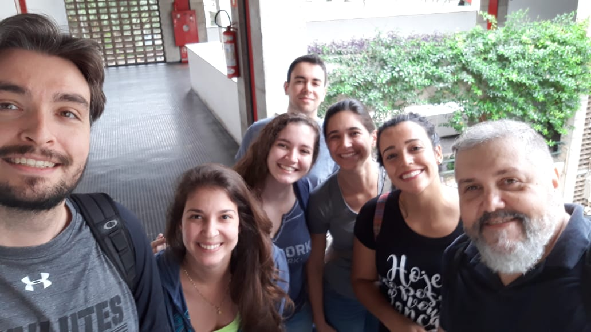
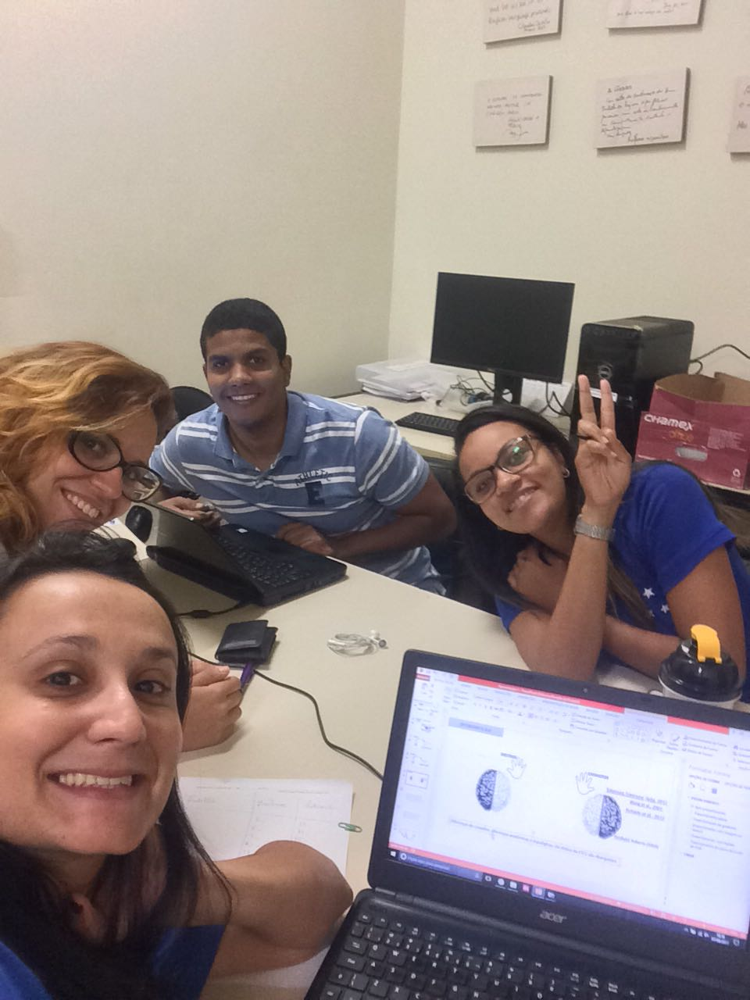
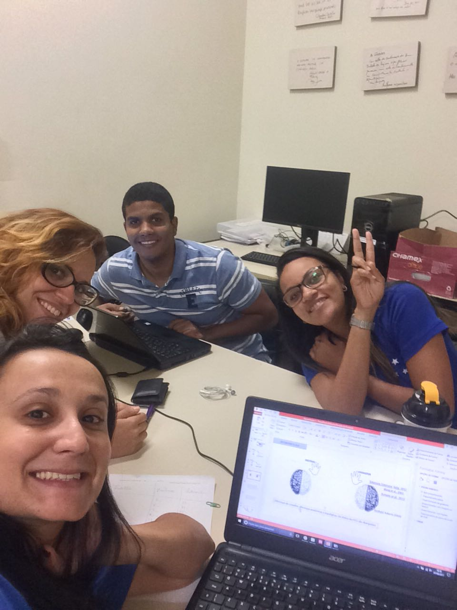
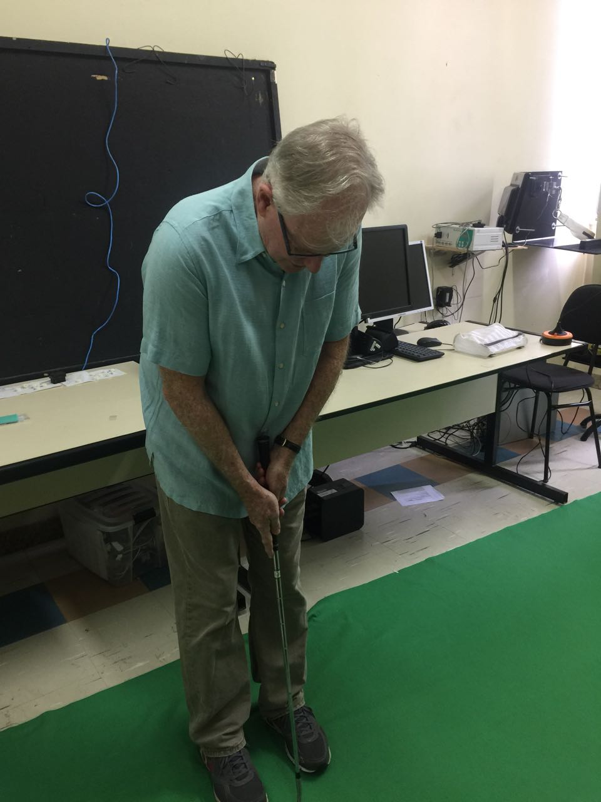
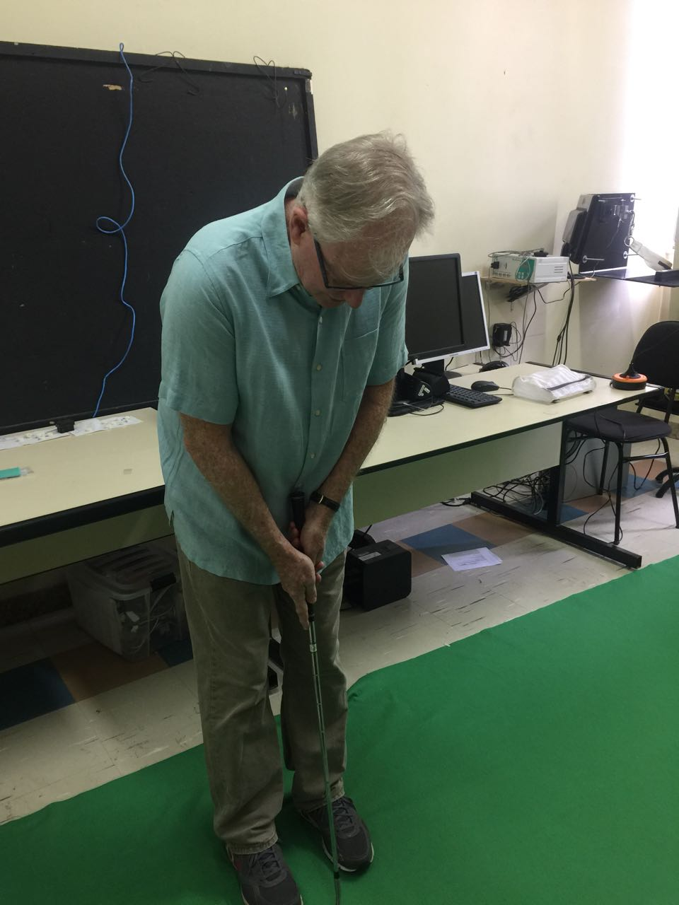

NNEUROM
Núcleo de Neurociências do Movimento
Sobre o NNEUROM
O Núcleo de Neurociências do Movimento (NNeuroM) é um núcleo de pesquisa do Grupo de Estudo em Desenvolvimento e Aprendizagem Motora (GEDAM) da Escola de Educação Física, Fisioterapia e Terapia Ocupacional da UFMG.
Nossa investigação sobre o estudo do movimento voluntário é realizado em diferentes níveis de análises, desde os mais macroscópicos (níveis sociológico e comportamental) até os mais microscópicos (eletrofisiológico e molecular).
O NNeuroM não caminha sozinho! Trabalhamos em colaboração com outros laboratórios da UFMG e mantemos parcerias com instituições no Brasil e ao redor do mundo. Nosso núcleo é composto por especialistas de diversas áreas - Educação Física, Fisioterapia, Terapia Ocupacional e Música.

 


 

 


 
